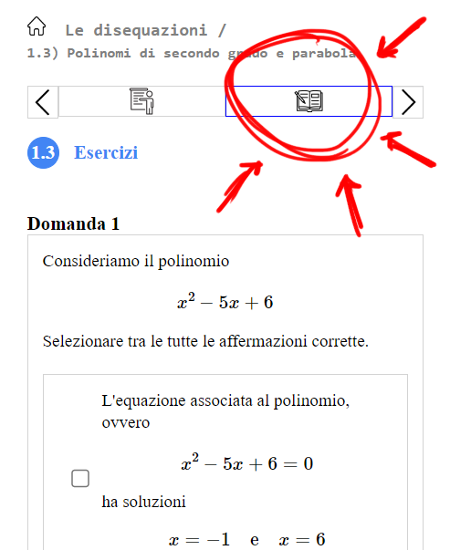

Agli esercizi si accede cliccando (li trovate cliccando sull'icona
 presente in alto a destra del paragrafo)
presente in alto a destra del paragrafo)

Studiare i paragrafi
presente in alto a destra del paragrafo)

Suggerimento
Le soluzioni dell'equazione associata
\[
x^2 + 1
\]
ci indicano dove la parabola che rappresenta il polinomio interseca l'asse delle \(x\).
Nel caso in cui l'equazione non abbia soluzioni possiamo concludere che...... (suspense!)
Soluzione: \(x \geq -\dfrac{2}{55}\)